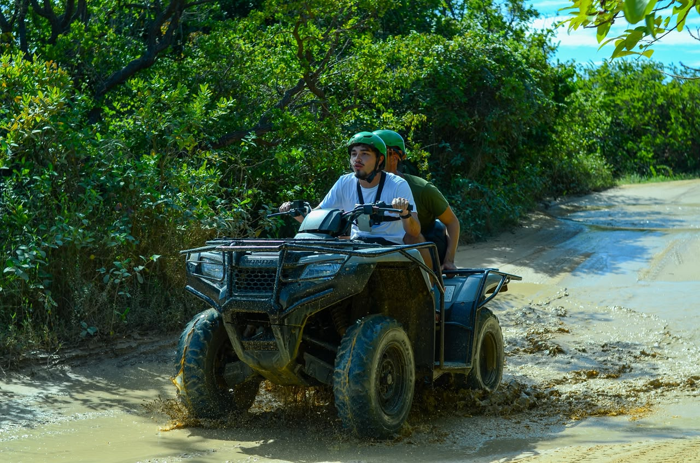
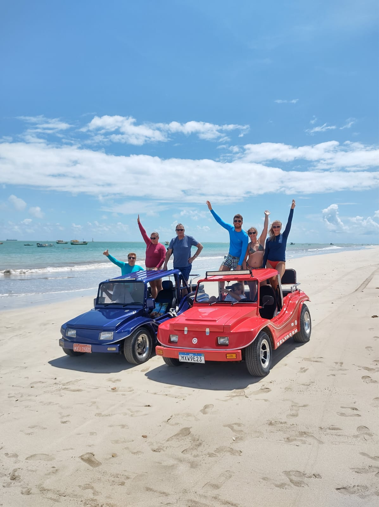
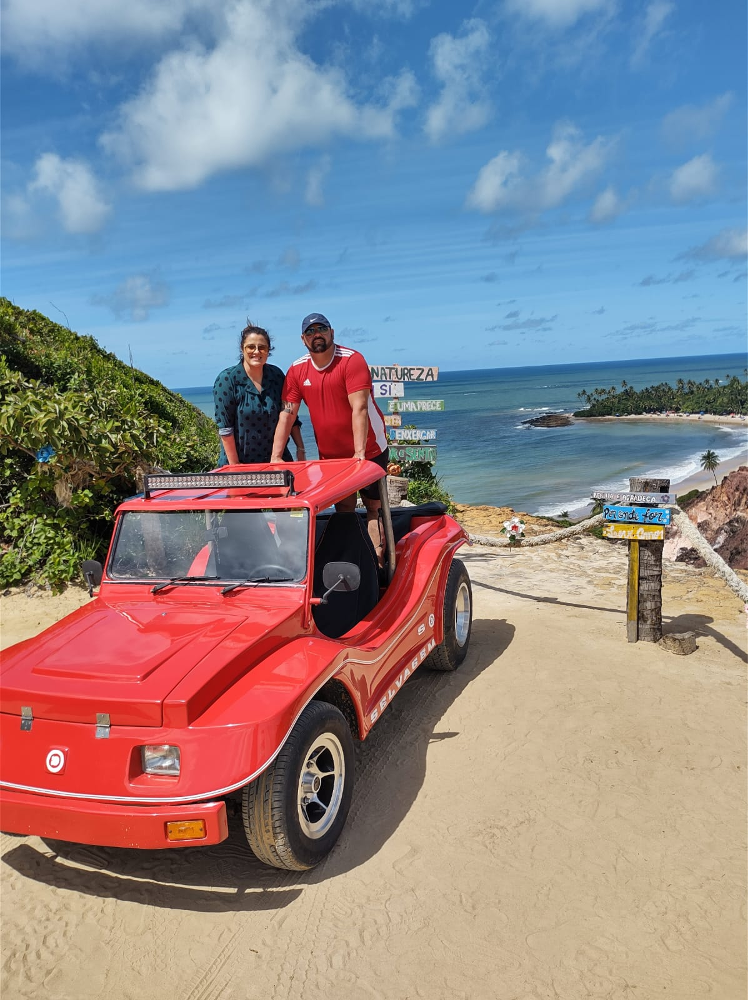
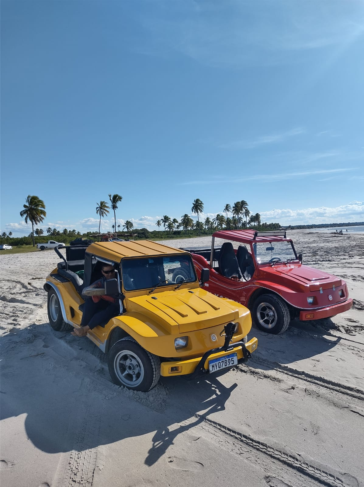
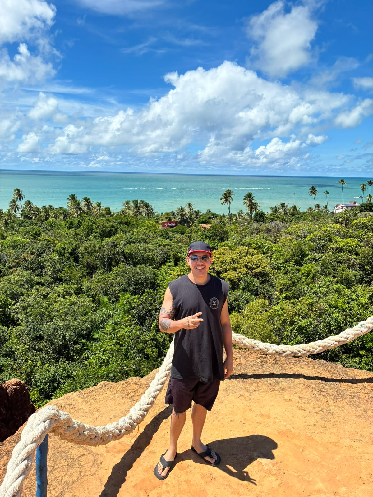
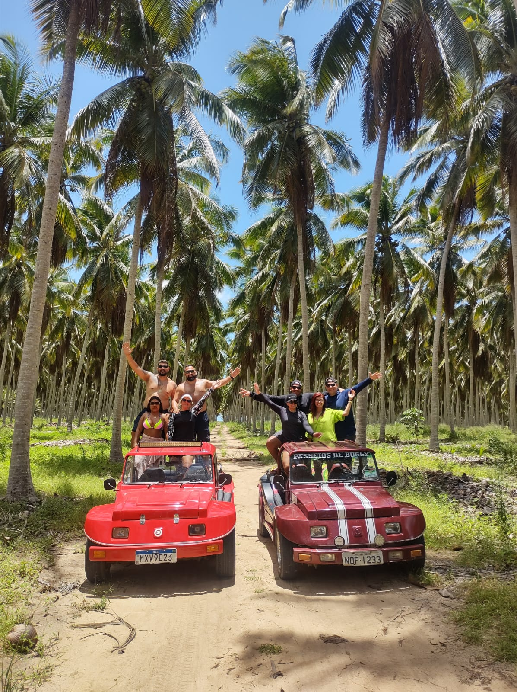

Piscinas Naturais
Piscinas Naturais do Seixas
PreçoR$ 100 / pessoa
Reservar pelo WhatsApp
Paraíba, Brasil
Viva o melhor do litoral paraibano com passeios feitos para ficar na memória.
Piscinas Naturais
Escolha como você quer viver essa experiência
De praias paradisíacas a roteiros históricos, encontre o passeio que combina com o seu momento e aproveite João Pessoa com mais praticidade.
Valores, roteiros e disponibilidade podem variar conforme a data, a maré, as condições climáticas, a capacidade dos veículos e a operação dos parceiros. Consulte nossa equipe antes de confirmar a reserva.
Outros destinos
Praias tranquilas, falésias, mirantes e o encontro do rio com o mar.
R$ 150Banco de areia com piscinas naturais de águas cristalinas na maré baixa.
R$ 100Cenários de cinema, construções históricas e a cultura do Cariri Paraibano.
R$ 300Duas cidades históricas do Nordeste em um único dia de passeio.
R$ 160Águas cristalinas, piscinas naturais e praias paradisíacas.
R$ 160Falésias, mirantes e mar azul no Rio Grande do Norte.
R$ 160Conheça alguns dos principais cenários e atrações da capital potiguar.
R$ 160Paraíba, Brasil
Viva o melhor do litoral paraibano com passeios feitos para ficar na memória.

Aventura
Uma experiência para quem quer sair do roteiro tradicional e viver a Paraíba de um jeito diferente, com aventura, paisagens e momentos para ficar na memória.
Consultar disponibilidadeExperiências no mar





Depoimentos
O atendimento foi próximo desde o primeiro contato e recebemos todas as orientações necessárias para aproveitar o passeio.
Foi uma experiência tranquila, bem organizada e com paisagens incríveis durante todo o passeio.
Conseguimos conhecer vários pontos da cidade com praticidade e aproveitar muito melhor o nosso dia.
Quem está por trás do Imperador
O Imperador do Turismo nasceu da minha conexão com João Pessoa, com o litoral paraibano e com as pessoas que chegam até aqui querendo aproveitar cada momento da viagem.
Hoje, ajudo casais, famílias e grupos a encontrarem passeios que realmente combinem com o estilo de viagem que desejam viver.
Mais do que indicar destinos, meu objetivo é oferecer informações claras, atendimento próximo e orientação desde o primeiro contato até o dia do passeio.
Você escolhe como deseja conhecer João Pessoa. O Imperador ajuda a cuidar do caminho.
Dúvidas
Encontre respostas para as principais dúvidas antes de escolher seu passeio.
Tirar dúvidasEscolha o passeio desejado e fale com nossa equipe pelo WhatsApp, informando a data da viagem e a quantidade de pessoas. Confirmaremos a disponibilidade, o roteiro, os horários e todas as orientações antes da reserva.
Depois da confirmação da disponibilidade, nossa equipe informará pelo WhatsApp as formas e as condições de pagamento disponíveis para o passeio escolhido.
As condições de cancelamento podem variar conforme o passeio, a antecedência e o parceiro responsável pela operação. Todas as regras serão informadas antes da confirmação da reserva.
A inclusão do transporte e o local de saída dependem do passeio escolhido. Nossa equipe confirmará essas informações durante o atendimento pelo WhatsApp.
Alguns passeios podem possuir despesas opcionais ou taxas cobradas diretamente no local. Antes da reserva, informaremos claramente o que está ou não incluído no valor.
A duração depende do roteiro escolhido. Existem passeios de aproximadamente 3 horas, meio período, 7 horas e opções de bate e volta. A duração aparece em cada passeio e também será confirmada no atendimento.
Recomendamos levar documento pessoal, protetor solar, água, roupas confortáveis, traje de banho e os itens pessoais necessários. Orientações específicas serão enviadas antes do passeio.
Paraíba, Brasil
Viva o melhor do litoral paraibano com passeios feitos para ficar na memória.